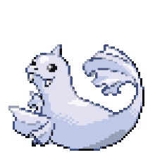

-
Bulbasaur #001

- Grama
- Veneno
Há uma semente de planta em suas costas desde o dia em que este Pokémon nasce. A semente cresce lentamente
-
ivysaur #002

- Grama
- Veneno
Quando o bulbo em suas costas cresce, parece perder a capacidade de ficar de pé em suas partes traseiras
-
Venusaur #003

- Grama
- Veneno
Sua planta floresce ao contato com a energia solar. Ele continua em movimento para buscar a luz solar
-
Charmander #004

- Fogo
Tem preferência por coisas quentes. Quando chove, sobe um vapor de sua calda
-
Charmelion #005

- Fogo
Evolução do charmander, sua calda pega mais fogo do que nunca. Em chamas
-
Charizard #006

- Fogo
- Dragão
Charizard apareceu pela primeira vez nos jogos Pokemon Red e Blue e subsequentes sequelas
-
Squirtle #007

- Água
Pokemon de agua da primeira geração, geralmente tem vantagens contra pokemons de fogo
-
Wartortle #008

- Água
Similar a uma tartaruga, ele controla suas orelhas e usa a calda para nadar
-
Blastoise #009

- Água
Consegue disparar um jato de água pelo canhão em seu casco, seu corpo é muito resistente
-
Dewgong #087
- Água
- Gelo
Semelhante a uma foca, está acostumada a viver em ambientes frios